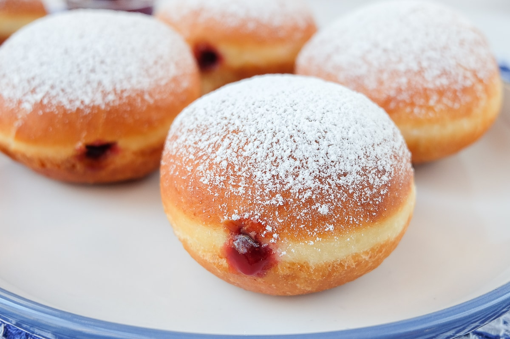

Krapfen was probably the first European-style doughnut to appear, followed by similar varieties in other countries. These pastries are traditionally prepared with leavened dough that is deep-fried until golden and crispy on the outside, while they remain soft, light, and airy on the inside.
Meal prep time : 1 hour 40 minutes
Servings : 6